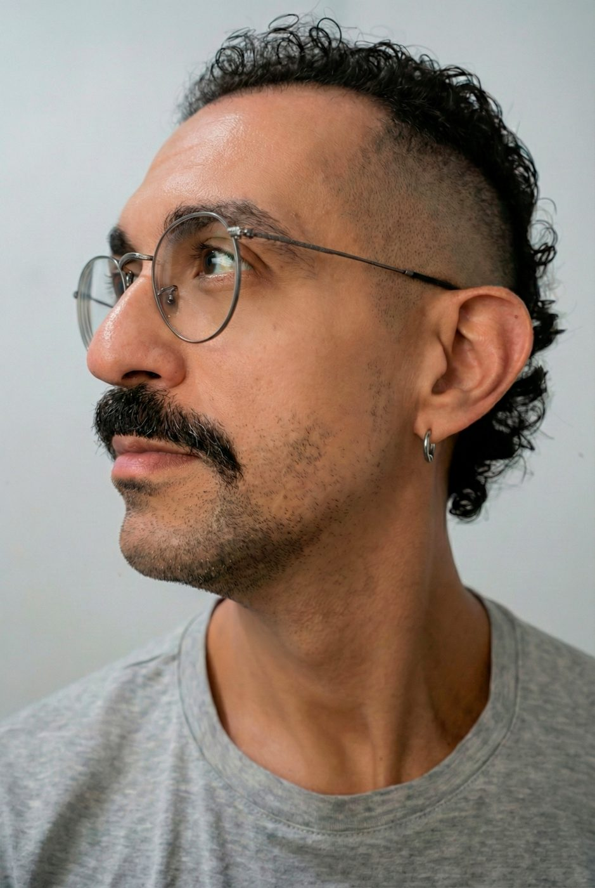
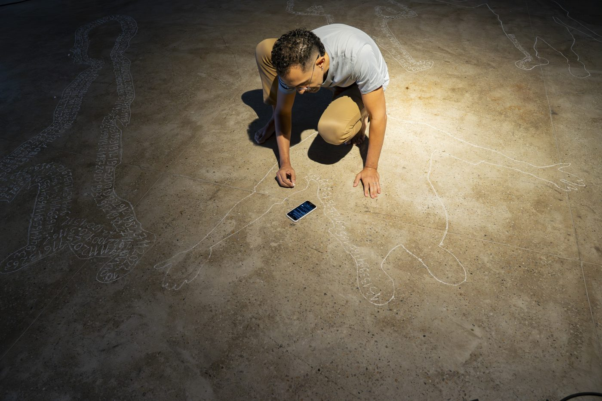
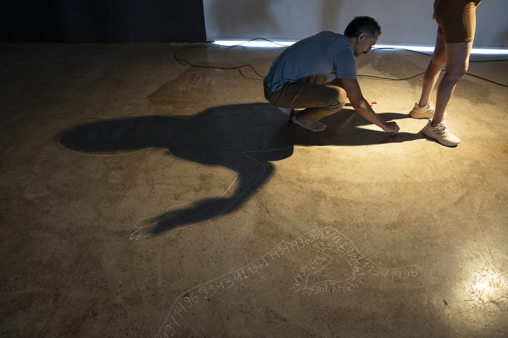
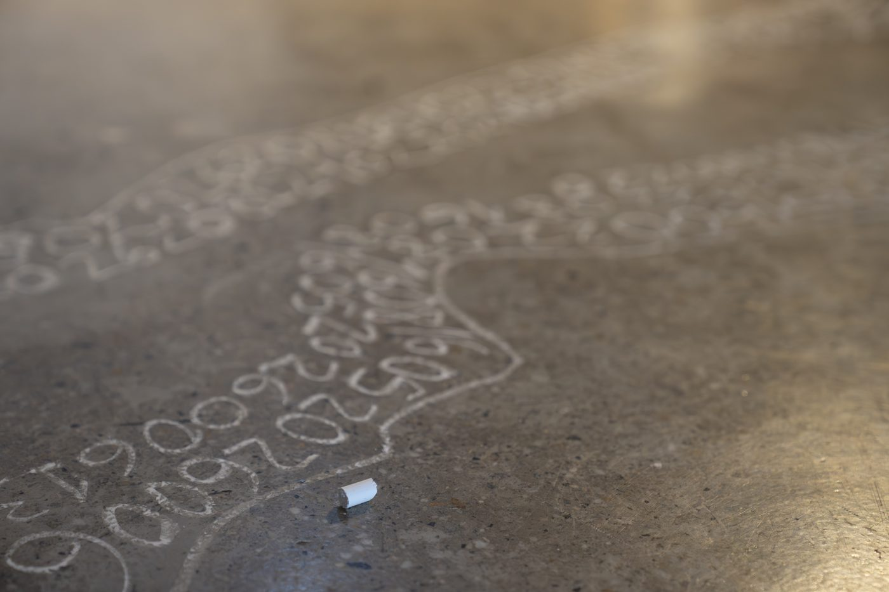
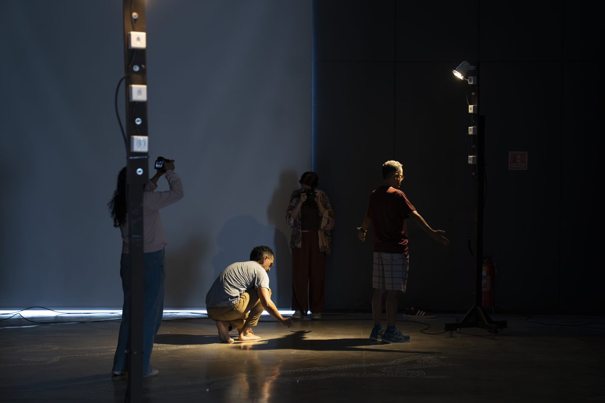
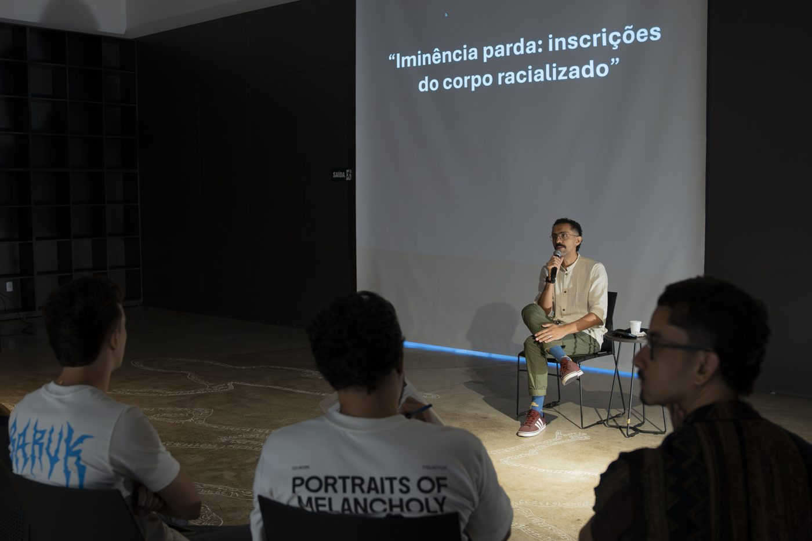
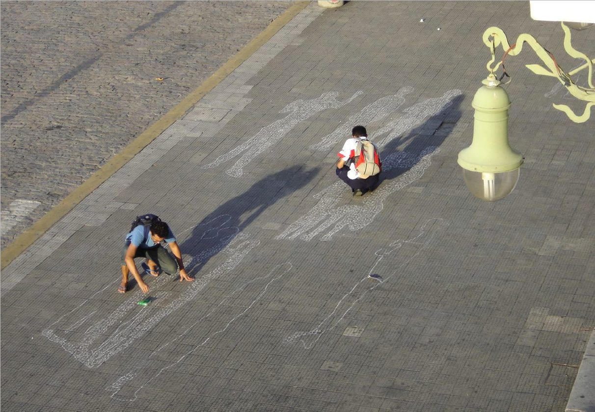
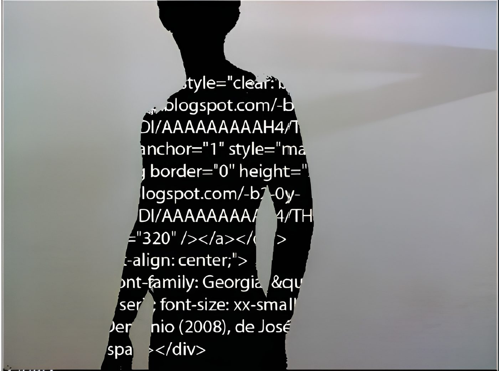
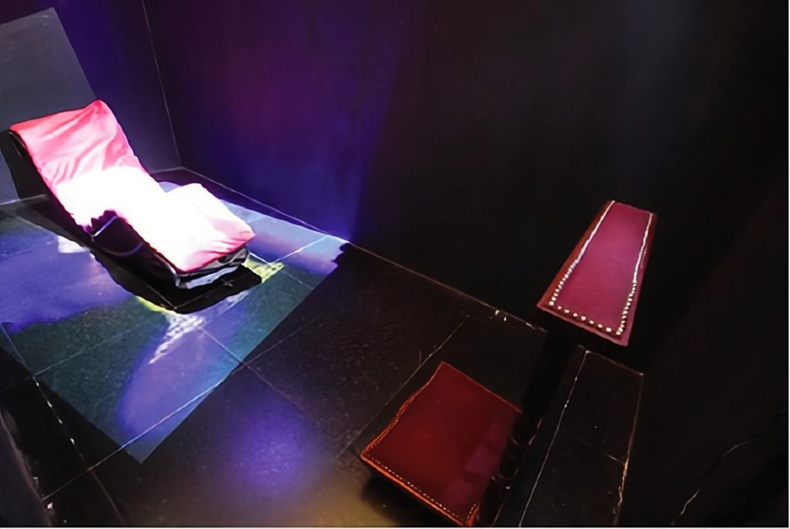
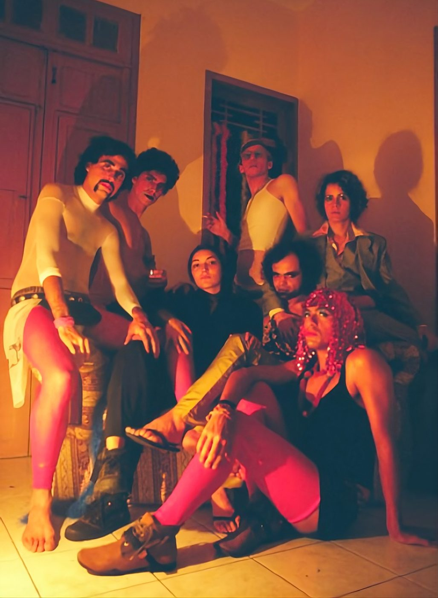

Artista visual e performer · videoinstalação, performance e a sombra como dispositivo de visibilidade · Fortaleza, Ceará

Edmilson Forte Miranda Júnior (Juin) é artista visual, performer e pesquisador. Doutor em Estudos Culturais pela Universidade de Aveiro (2026), com tese sobre Afrofuturismo e cultura de resistência nos quadrinhos brasileiros, é mestre em Comunicação (2013) e graduado em Comunicação Social (2008), ambos pela Universidade Federal do Ceará.
Sua obra investiga, há mais de duas décadas, a sombra como dispositivo — a imagem que o corpo cede ao espaço e, com ela, a pergunta sobre quais corpos o imaginário social escolhe ver e quais mantém na penumbra. Da videoinstalação interativa (dissertação Sombra projetada) ao Afrofuturismo e aos discursos decoloniais, seu trabalho articula corpo, tecnologia e visibilidade como questão política.
Membro fundador do Projeto Balbucio (coletivo de performance e intervenção urbana, ativo de 2003 a 2011) e pesquisador do LICCA — Laboratório de Investigação em Corpo, Comunicação e Arte (UFC). Em 2026, apresentou na Pinacoteca do Ceará a performance Por onde anda a luz e a conversa de ateliê Iminência Parda. Atua também como designer editorial à frente do estúdio Etc Rapadura e como professor universitário. Vive e trabalha em Fortaleza.
Performance participativa e conversa de ateliê · Pinacoteca do Ceará · 16 de maio de 2026 · 1º Ciclo de Exposições e Performances

Visitantes que circulavam pela Pinacoteca eram convidados a doar a própria sombra: projetada no chão e contornada a giz pelo artista. A cada pessoa, pedia-se uma palavra com significado próprio — convertida em números pela numerologia pitagórica e em sequência hexadecimal, que passava a preencher, em espiral, o interior da silhueta. Cada sombra tornava-se, ao mesmo tempo, retrato e cifra: a presença de um corpo e a inscrição de uma biografia.
Retirada de sua condição de mero reflexo, a sombra torna-se figura dos sujeitos que o imaginário ocidentalizado mantém invisíveis — em especial a condição parda no Brasil, sob o que Lélia Gonzalez chamou de racismo por denegação. Presenças que existem, mas são separadas de si; imagens que confirmam o corpo e o deslocam. A chuva daquele dia, ao expulsar a obra do pátio e da luz solar para a penumbra dos spots, devolveu-lhe a própria pergunta: por onde anda a luz, quando é preciso decidir o que iluminar?



A ação formativa — a conversa de ateliê Iminência Parda: inscrições do corpo racializado — aconteceu sobre o piso ainda marcado pelas sombras da tarde. Partindo da metáfora da sombra, articulou visibilidade e invisibilidade, colorismo, parditude e o direito a ser visto, em diálogo com a crítica decolonial à suposta neutralidade de conceitos como "número" e "democracia racial".
A obra funcionou como dispositivo de escuta. Um visitante com dificuldades auditivas pediu mediação de frente, para leitura labial; um jovem surdo doou um sinal em Libras como sua palavra, incorporando a língua de sinais ao acervo simbólico da obra. A acessibilidade não foi protocolo: foi encontro.

Uma trajetória contínua: da silhueta cifrada nas calçadas de Fortaleza à videoinstalação interativa, a mesma pergunta retorna — o que a imagem confirma e o que ela rapta.
Sombras de transeuntes abordados em calçadas e praças são fixadas no chão em desenho e preenchidas com números do cotidiano. A cidade como tessitura; o indivíduo absorvido pela coletividade. O gesto seminal que, quase vinte anos depois, retorna na Pinacoteca.

Videoinstalação interativa em que a projeção funciona como meta-dispositivo: um sistema que fala do dispositivo, na chave de Foucault e Flusser. Captura e projeção da sombra em tempo real, feita de números — a obra que fundou o vocabulário conceitual de toda a pesquisa seguinte.

Dois móveis — um genuflexório e um divã — servem de tela a duas projeções: o rosto capturado ao vivo por câmera de vigilância e uma silhueta pré-gravada de corpo. Um corpo virtual ocupa o espaço, entre o sagrado e o profano, a presença e a ausência.

Coletivo que consolidou práticas de performance e intervenção no Ceará. Entre os trabalhos, Glossolalic Machine (pulsos glossolálicos convertidos em imagem projetada) e Ternos (performance urbana sobre trabalho e invisibilidade social na Praça do Ferreira). Corpo, política e poética no espaço público.
